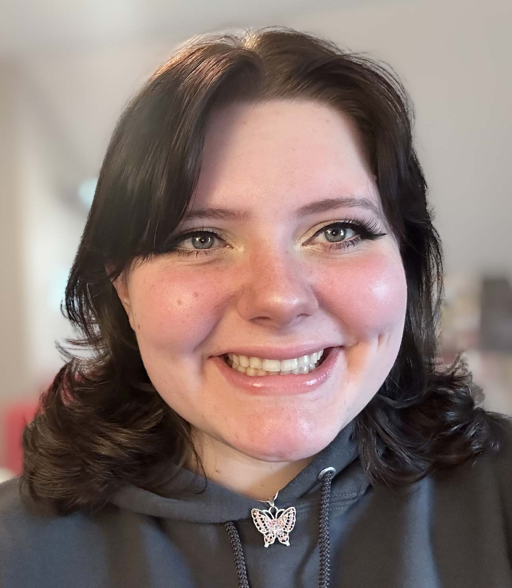

ABOUT ME

Hi, I'm Autumn. I am a designer who aims to make a difference by advocating for the environment, sharing humor, and spreading optimism in my work. My process often incorporates original illustration and hand-rendered typography. I love using a variety of mediums and styles to convey messages in impactful ways.
As a singer, I have always been drawn to music. Recently, writing, recording, and publishing original songs under the band name Hydrozoans has allowed me to combine sound and visuals for an immersive experience.